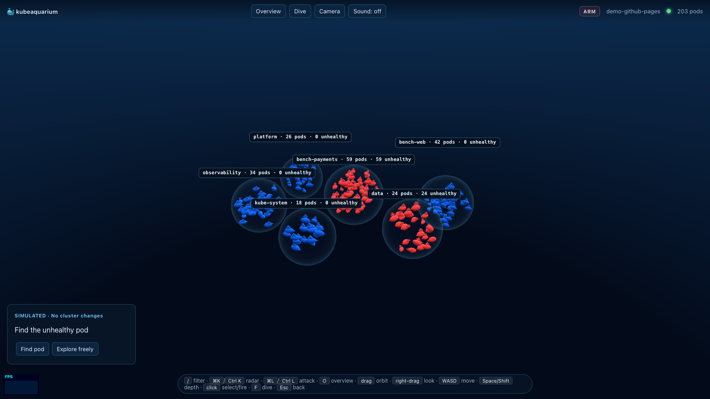
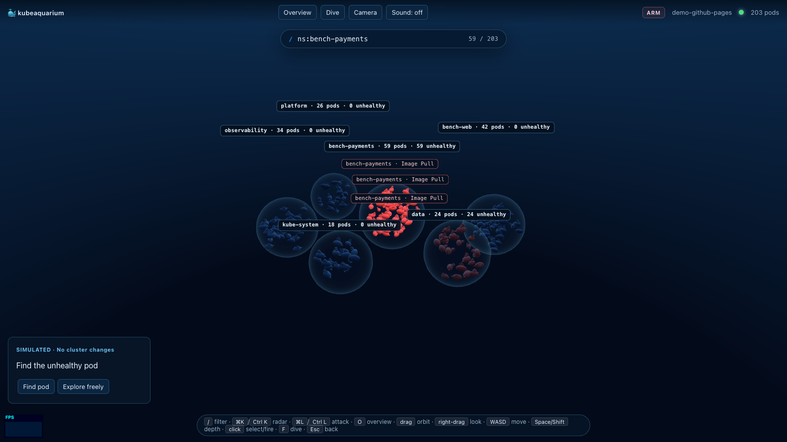
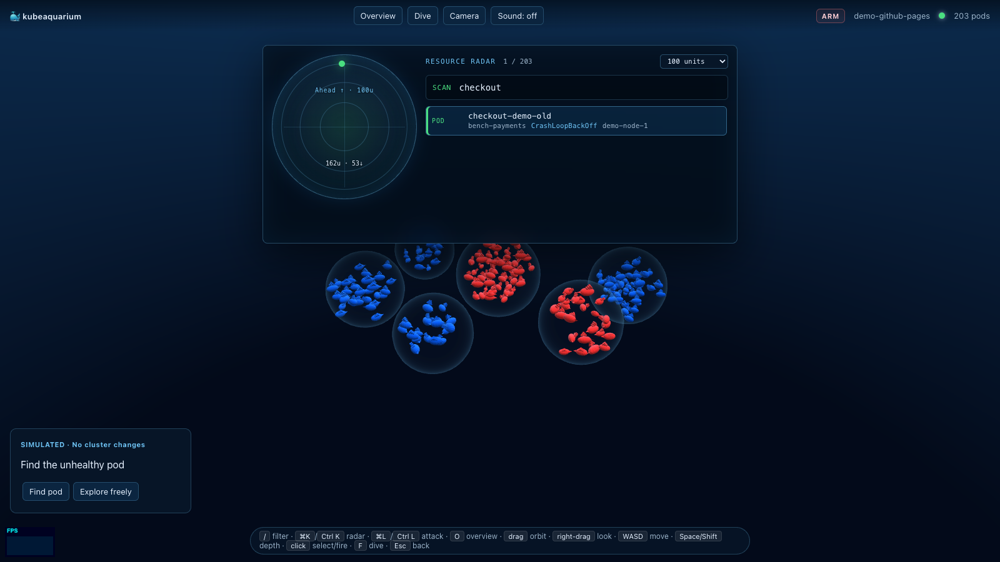
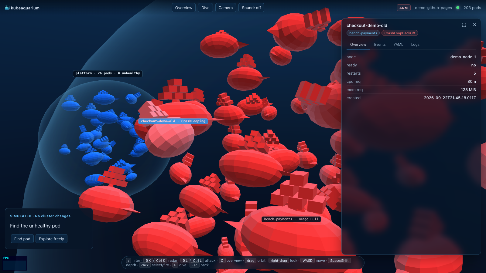
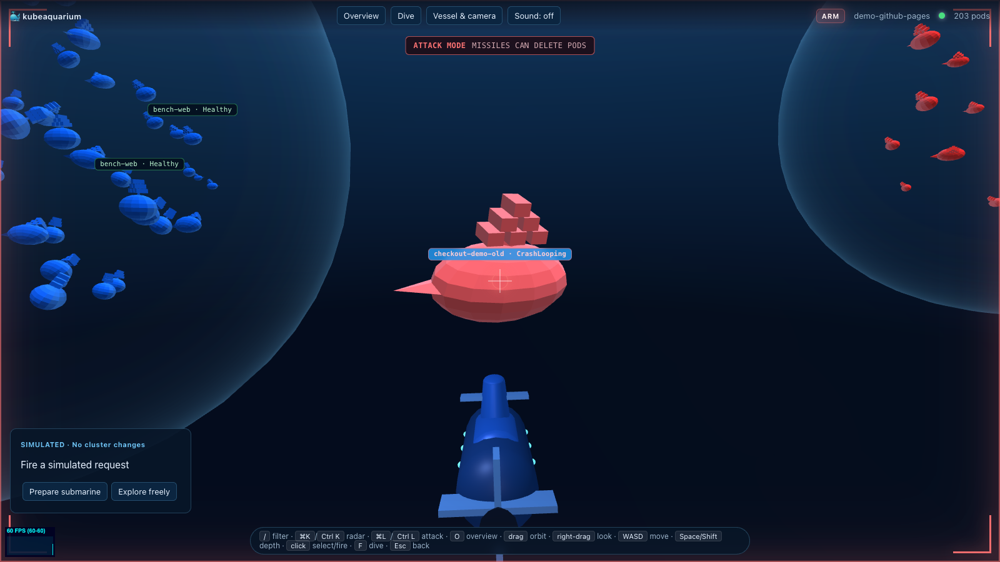
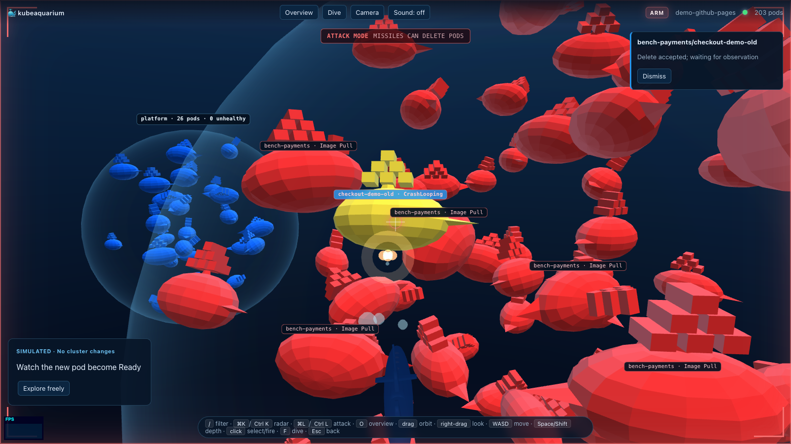

Every pod is a Docker whale. Namespaces are floating bubbles. Broken pods turn red and jitter.
And when you really need to delete one, there's a submarine.
The live demo runs entirely in your browser with synthetic cluster data. No Kubernetes required.
Watch the demo
Explore the cluster, find a failing pod, dive in and fire. Recorded in the simulated demo.
Soundtrack: “Hawaiian Hotel”, Ferera & Paaluhi (public domain).
Features

Namespaces as bubbles, pods as whales
Each namespace is a rim-lit bubble sized by pod count and whale volume. Each pod is a Docker whale; its size maps
requested CPU and memory (or limits), not live usage. Color is status: blue running, red and jittering on
CrashLoopBackOff / ImagePullBackOff / Error, green for Succeeded.

k9s-style filtering
Press / and type. Non-matching whales dim instantly; Enter flies to the closest match.
Terms AND together: nginx, /^worker-/, ns:web,payments,
phase:!Running, node:…, reason:CrashLoopBackOff.

Resource radar
Ctrl/⌘ + K opens a sonar-styled command palette with fuzzy-ranked pods by name,
namespace, phase, node or reason. Markers use real scene positions around your heading, with a range of 50, 100,
250 or 500 units.

Pod detail panel
Click a whale and it freezes and opens its dossier: Overview (node, ready, restarts, requests, age),
Events, YAML (without managedFields) and live-streaming
Logs with a container picker.

Dive mode & three submarines
Press F to pilot the submarine through the cluster. In Vessel & camera choose
Nautilus (classic hull), Manta (swept wings) or Atlas (twin pods);
the choice persists locally. Look sensitivity, invert Y, reduced motion and optional sound are there too.

Gamified chaos: attack mode
Ctrl/⌘ + L arms the missiles; click while diving to fire. In live mode a hit
deletes the real pod (UID precondition), then the recovery panel follows what the cluster
actually does: original pod gone, replacement from the same controller, replacement Ready.
Demo mode — ?demo swaps the cluster for synthetic in-browser data with a guided, skippable “SIMULATED” mission.
Server-side narrowing — --namespace and --label-selector filter at the informer, so big clusters only send what you asked for.
One draw call — all whales live in one InstancedMesh, with boids, adaptive resolution and pooled effects.
Hotkeys & controls
Keyboard and mouse controls, as implemented in web/src
Input
Action
Where
/
Open the filter bar
Anywhere
Enter
Fly to the closest match and open its detail
Filter bar
Ctrl/⌘ + K
Open / close the resource radar
Anywhere
↑↓ · Enter
Move through results · inspect the selected pod
Radar
F
Enter / leave dive mode
Aquarium
WASD or arrow keys
Move the submarine
Dive
Space · Shift
Rise · descend
Dive
Right mouse button + drag
Look around
Dive
Left drag · mouse wheel
Orbit · zoom
Overview
Click a whale
Select it and open the detail panel
Aquarium
O
Frame the whole cluster (overview)
Anywhere
Ctrl/⌘ + L
Arm / disarm attack mode
Anywhere
Left click
Fire a missile at the reticle
Dive + attack armed
Esc
Close the frontmost panel (radar, filter, settings, detail), then leave dive
Anywhere
How it works
One Go binary on your machine. It talks to whatever cluster your kubectl context points at, and serves an
embedded Three.js frontend to your browser.
How to use
Install
curl -sSfL https://raw.githubusercontent.com/gabriel-dantas98/kubeaquarium/main/scripts/install.sh | sh
Or with Go:
go install github.com/gabriel-dantas98/kubeaquarium/cmd/kubeaquarium@latest
kubeaquarium # uses your current kubectl context
kubeaquarium --context my-eks # pick a context
kubeaquarium --namespace payments --label-selector app=api
kubeaquarium contexts # list available contexts
The browser opens at http://127.0.0.1:7777. Whatever cluster your kubectl can reach,
kubeaquarium can reach.
Rehearsing a talk? Use a throwaway cluster
make cluster # spin up a local kind cluster
make samples # deploy sample workloads across namespaces
make web-deps # install frontend deps (one-time)
make run # build + start http://127.0.0.1:7777
make scale N=500 # stress test